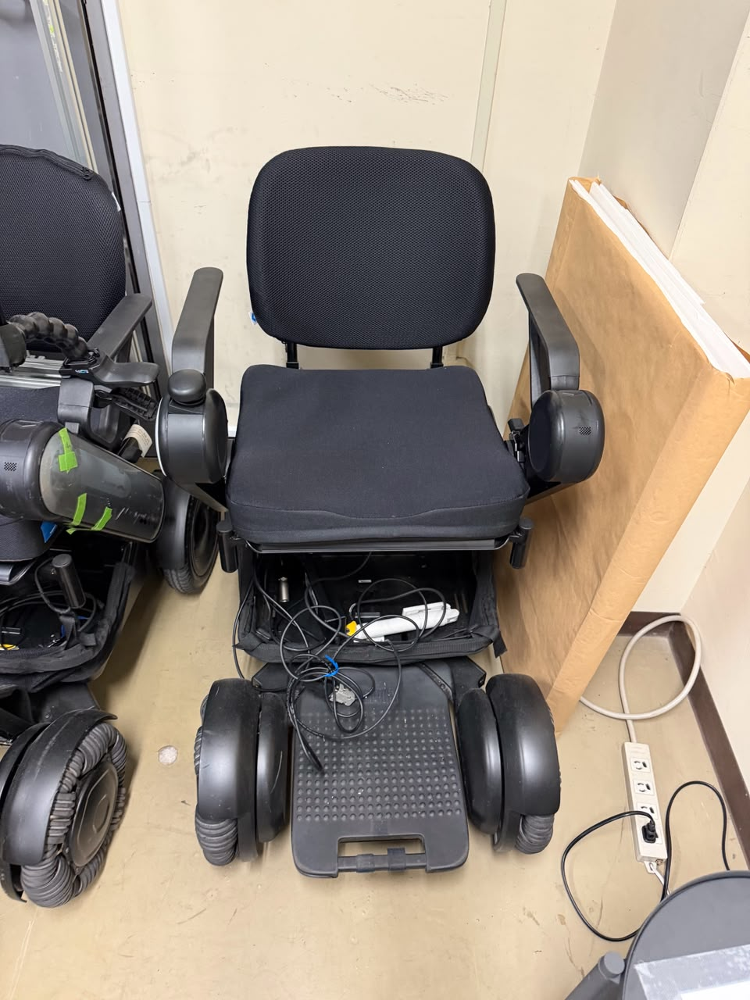
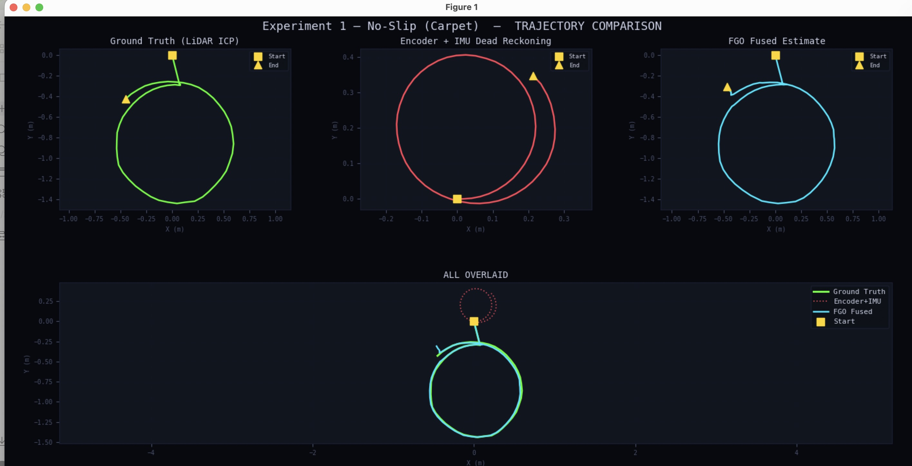
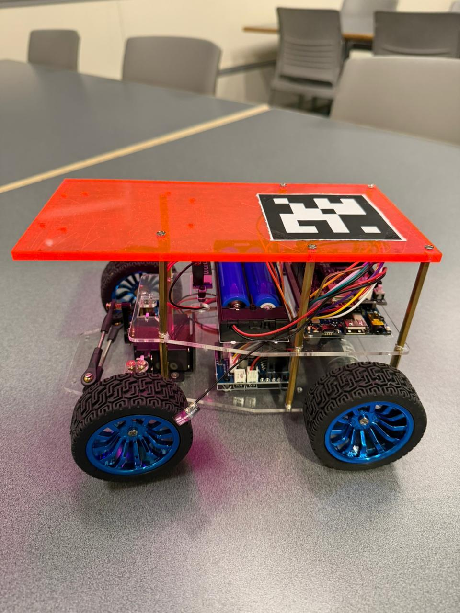
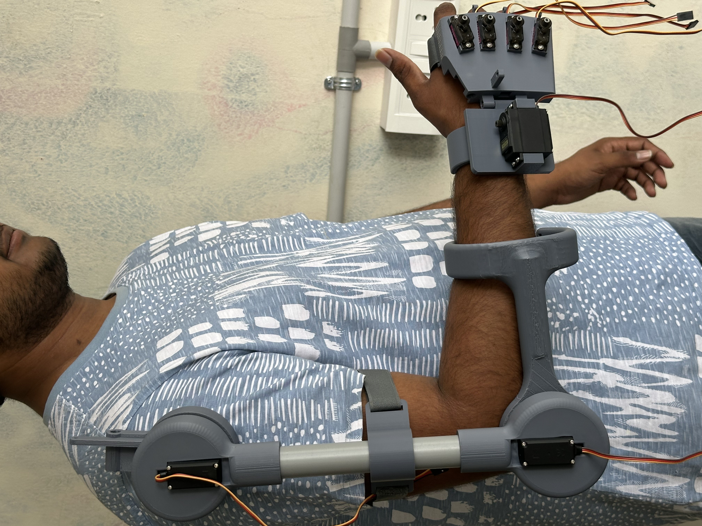
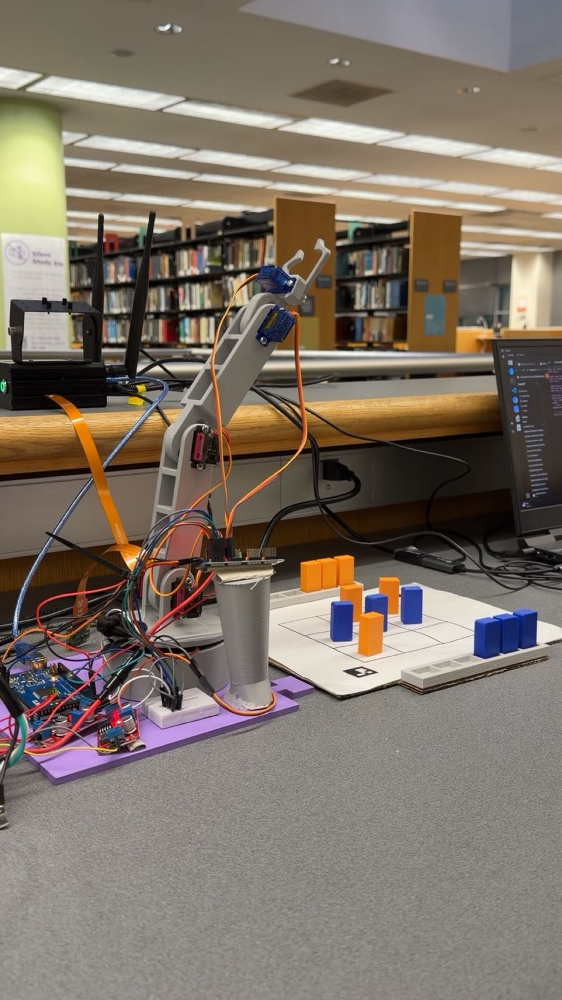
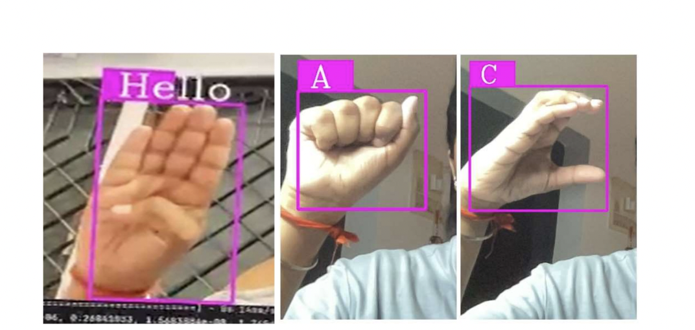
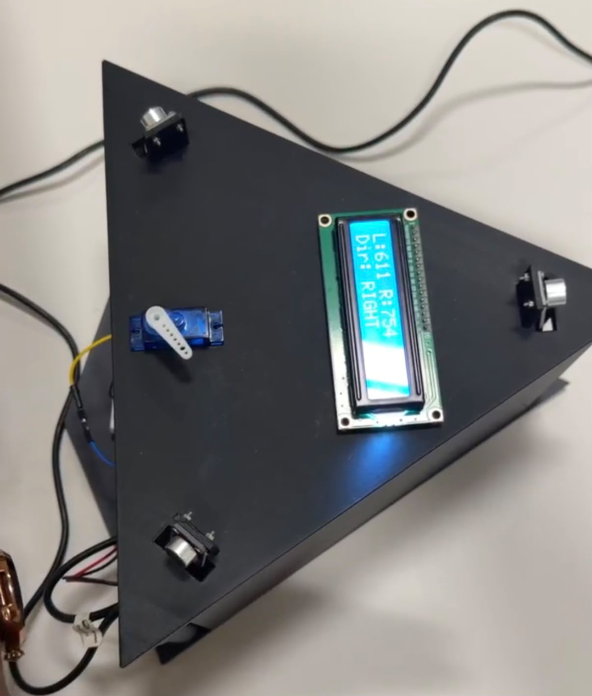

// Autonomous Navigation · SLAM · Perception · Robotics
MS Mechatronics & Robotics at NYU Tandon. I build systems that navigate, perceive, and act — from VLA-based autonomous navigation to multi-sensor SLAM pipelines and real hardware that ships.
I'm a robotics engineer focused on autonomous navigation, SLAM, and perception systems. Currently conducting funded research at Nagoya University on VLA-based wheelchair robot navigation under Prof. Hiroyuki Okuda.
My work spans the full stack — defining kinematics, integrating sensors, building state estimation pipelines, training perception models, and deploying everything on real robots in real environments.
I care about systems that actually work: hardware debugged at 2am, benchmarks that tell the truth, and models that run on the robot — not just in simulation.
// Selected Work
End-to-end systems — from sensor hardware and algorithm development to real-robot validation and structured testing.

Funded research at Nagoya University (JUACEP Program) under Assoc. Prof. Hiroyuki Okuda. Integrating vision-language-action (VLA) models into real-time wheelchair robot control for goal-directed autonomous navigation — enabling zero-shot task execution without task-specific retraining.

Multi-sensor fusion system for resilient indoor localization under slip and sensor noise — FGO-based optimization outperforming EKF in degraded conditions.

Full localization pipeline from scratch: EKF and Particle Filter implementations, LiDAR-camera fusion, benchmarked across 3 real sensor datasets using ATE and RTE metrics.

Multi-joint upper-limb robotic exoskeleton — full system from SolidWorks kinematics through fabrication, EOG sensor integration, real-time closed-loop control, and structured V&V testing.

Human-robot interactive system using CV for real-time board detection. NVIDIA Jetson Nano handles perception; Arduino Uno handles actuation. End-to-end from vision to pick-and-place.

Embedded vision system on Raspberry Pi translating sign language gestures to text at over 20 FPS with over 99% accuracy across gesture classes, optimized for ARM hardware.

Full-stack pipeline from embedded acquisition to ML inference — multi-microphone array with SPI communication detecting propeller acoustic signatures across varying RPM and noise conditions.
// Capabilities
// Background
Research and engineering roles across Japan, India, and the US.
// Let's Connect
Targeting full-time roles in robotics engineering, autonomous navigation, SLAM, and perception systems at companies like Boston Dynamics, Amazon Robotics, and NVIDIA. Available from Summer 2027.